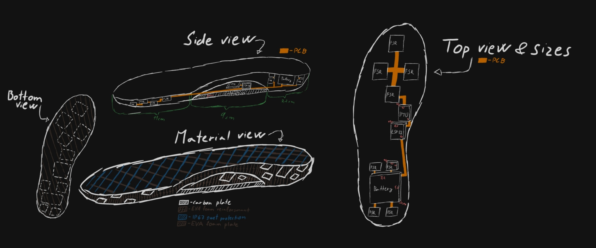

Časté problémy
Došlap na patu před těžištěm
Noha dopadá daleko před tělo, což funguje jako brzda a přenáší otřesy přímo do kolen a kyčlí.
problém až 70% běžců.
Příliš dlouhý krok
Považován za jednu z nejčastějších a nejzávažnějších chyb při běhu, protože zásadním způsobem narušuje biomechaniku pohybu.
problém až 80% běžců.
Nízká kadence
Malý počet kroků za minutu (ideál je kolem 170–180) vede k delšímu kontaktu s podložkou a větším otřesům.
problém až 80% běžců, průměrný hobby běžec se často pohybuje v rozmezí 150–165 kroků za minutu.
Nevyvážený došlap
Dopad na patu:
Tento styl funguje jako brzda, která vysílá škodlivé nárazy přímo do vašich kolen a kyčlí.
Dominance paty, tento styl používá 89 % až 95 % rekreačních běžců.
Dopad na špičku:
Extrémně přetěžuje lýtka a Achillovky, což často vede k zánětům nebo únavovým zlomeninám nártu.
Dominance špičky, tento styl je v populaci vzácný, přirozeně ho běhá jen 1 % až 2 % lidí.
udělejte krok kupředu a zjistěte více o budoucnosti běhu.
Jak to všechno začalo?

Naše cesta začala jednoduchým pozorováním: běžci často trpí zraněními způsobenými špatnou technikou. Chtěli jsme vytvořit něco, co by jim pomohlo zlepšit jejich běh a zároveň předešlo zraněním. Zde jsou první náčrty a myšlenky, které nás vedly k vývoji SoleSens.
A kde jsme teď?

Dnes máme kompletně vyvinuté funkční prototypy a aplikaci, které jsou připravené k testování a dalšímu vývoji. Vývoj není jen o technologiích a navrhování PCB desek, ale také o vnějšímu materiálu, který je klíčový pro pohodlí a funkčnost vložky.
Klikni pro zobrazení podrobností
Ještě vše připravujeme
Klikni pro zobrazení aplikace
Naše aplikace nabízí širokou škálu funkcí, které pomáhají běžcům efektivně zlepšovat techniku i celkový výkon.
- Live obrazovka Zobrazuje klíčové metriky v reálném čase přímo během běhu – od kadence a délky kroku až po přesný došlap. Také dostáváte doporučení pro zlepšení techniky během běhu.
- Analýza po běhu Podrobné statistiky, které vám pomohou do hloubky pochopit vaši techniku a identifikovat oblasti pro další zlepšení.
- Zpětná Heatmapa Jedna z našich nejlepších funkcí. Umožňuje sledovat live heatmapu zpětně, na jejichž základě získáte personalizovaná doporučení. Pro pokročilé běžce toto může sloužit jako cenný nástroj pro analýzu a zlepšení techniky.